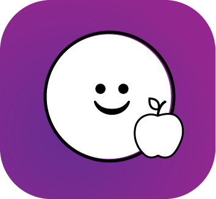

FOOD TRACKING

Life is short, Pabulum makes tracking food easy and simple. No measuring, No sifting through thousands of recipes, simply enter whole ingridients or scan your plate. Using FOOD API technology the future of daily logging is in your hands.